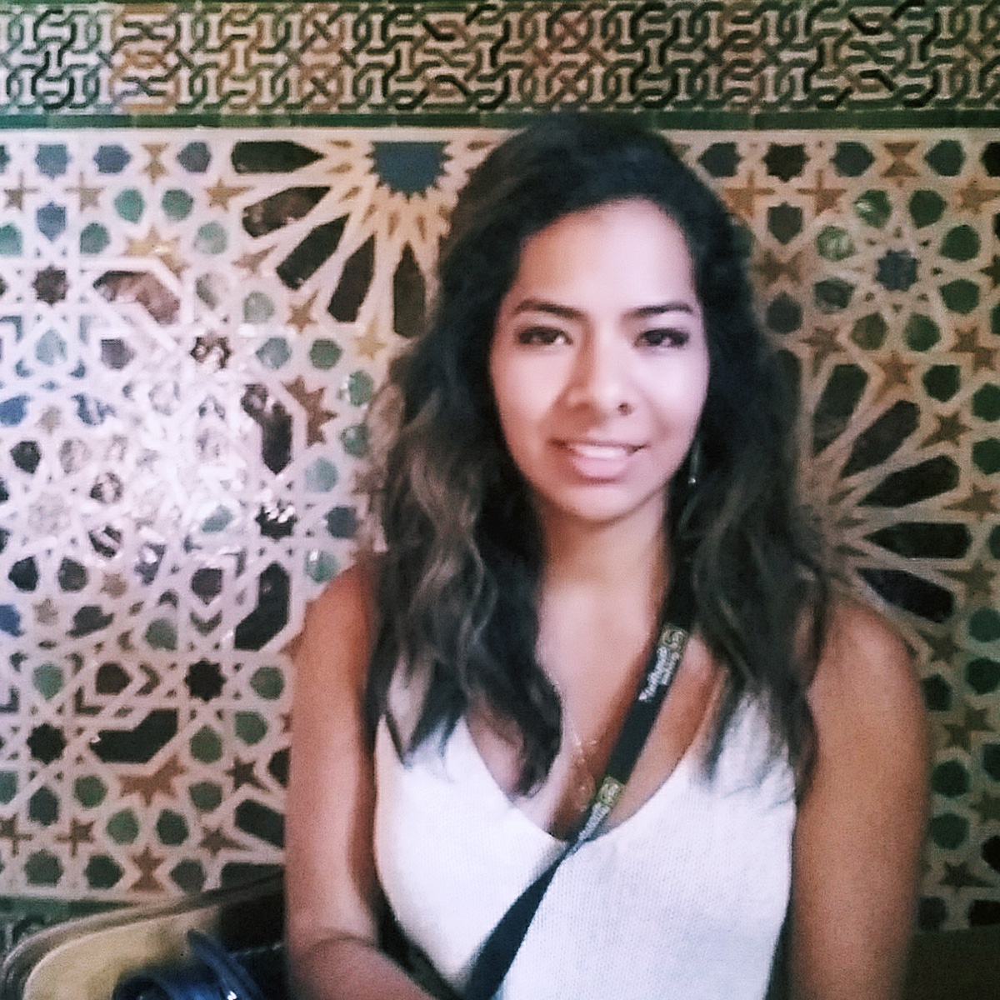

Graphic Design graduate, acting as the "fusion" between art, engineering, research, and science. Her ability to think critically while working seamlessly across disciplines, blending together their best aspect, is what will make her a "Fusionist."
While still expertly versed in classical design skills, the fusionist will mix those skills with a "generalist" approach to technology,
Technical
Adobe Suite
Photoshop Illustrator InDesign AfterEffects
Photography and Video
Programing
HTML CSS JavaScript Ruby on Rails
Education
Instituto de Estudios Superiores de Diseño - Arte, A.C.
Lic. Diseño Gráfico
Curses
IScuola di Italiano Dante Alighieri
Corsi di Lingua e Cultura Italiana per Stranieri
Camerino, It. /Luglio 2013
CONARTE Escuela Adolfo Prieto
Laboratorio LET US PLAY! Video Creación Experimental,
Utilizando las técnicas de VJ de Manera Colectiva.
Mty, Mx / Septiembre 2013
CONARTE Escuela Adolfo Prieto
Taller interdisciplinario “Mixing Media Arts”
Mty, Mx /Junio 2014
Experience
Food For You
Community Manager, encargada de generar contenido activo.
Redes Quinto Poder ONG
Encargada de generar material gráfico para contenido web.
Redes Quinto Poder ONG
Encargada de generar material gráfico para contenido web.
